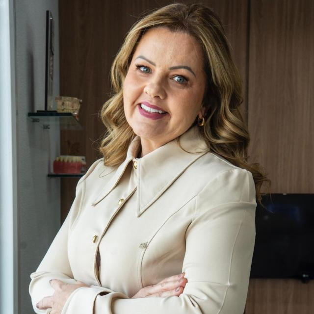
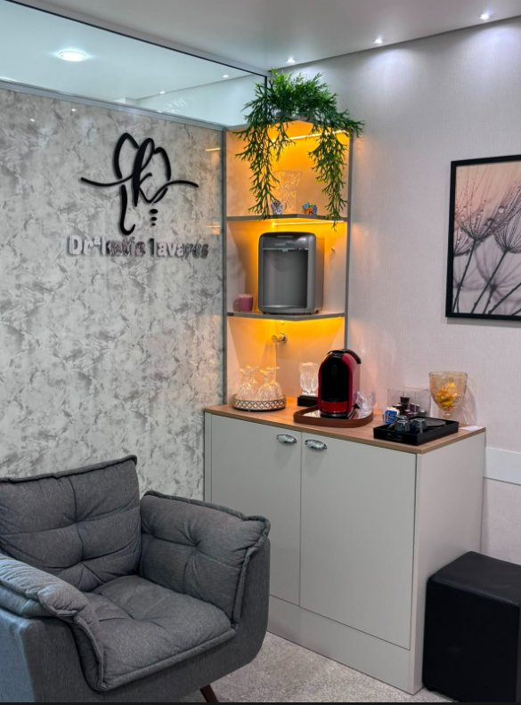

Volte a sorrir e mastigar com segurança.
A Dra. Katia Tavares é implantodontista e cuida do seu sorriso por completo: implantes, próteses, ortodontia, lentes em resina, clareamento e limpeza.
O implante substitui a raiz do dente perdido.
O que fazemos
Cada caso começa com uma avaliação completa. O tratamento indicado depende da quantidade de osso, da saúde da gengiva e do que você espera do resultado.
Implantes
A especialidade da Dra. Katia. Repõe dentes perdidos com implantes de titânio fixos no osso.
Coroa sobre implante
Indicada para substituir um dente perdido: a coroa é fixada sobre o implante, com aparência natural.
Prótese protocolo
Prótese fixa sobre implantes para quem deseja substituir todos os dentes de uma arcada.
Prótese total e móvel
Próteses removíveis para substituir um, vários ou todos os dentes e recuperar a mastigação.
Ortodontia
Aparelho ortodôntico para corrigir a posição dos dentes e a mordida.
Lentes em resina
Para quem deseja fazer pequenas correções de cor, formato e tamanho dos dentes.
Clareamento
Deixa os dentes mais brancos, com acompanhamento da dentista em todo o processo.
Limpeza e prevenção
Limpeza indicada a cada 6 meses para manter a saúde dos dentes e da gengiva.
Não sabe qual é o seu caso?
Na avaliação, a Dra. Katia examina e indica o tratamento certo para você.
Agendar avaliaçãoEtapas do tratamento
Os prazos abaixo são uma referência geral. O seu cronograma é definido na avaliação.
Avaliação
Consulta, exame clínico e conversa sobre o que você precisa.
Planejamento
Exames de imagem, como a tomografia, para posicionar o implante com precisão.
Instalação
Cirurgia com anestesia local para colocar o implante no osso.
Osseointegração
O osso se une ao titânio. Pode haver um dente provisório nesse período.
EM GERAL 3 A 6 MESESPrótese final
Instalação da coroa ou prótese definitiva e revisões periódicas.

Dra. Katia Tavares
Implantodontista, a Dra. Katia acompanha pessoalmente cada etapa do tratamento, da primeira consulta à entrega da prótese.
[Formação, especializações e anos de experiência da Dra. Katia.]
Pensado para o seu conforto
Priorizamos um atendimento personalizado, com tempo para ouvir você e explicar cada etapa do tratamento.
O consultório fica no Edifício Guarulhos Office Tower, no Centro de Guarulhos, com recepção aconchegante para você aguardar com tranquilidade.
Ver localização
Perguntas que recebemos
Não encontrou a sua? Pergunte na consulta de avaliação.
A colocação do implante dói?
A cirurgia é feita com anestesia local. Depois, é comum sentir algum desconforto por poucos dias, controlado com a medicação indicada pela dentista.
Quanto tempo dura um implante?
Com boa higiene e revisões regulares, o implante pode durar muitos anos. Escovação, fio dental e consultas de manutenção fazem diferença.
Qualquer pessoa pode colocar implante?
A maioria dos adultos pode. A avaliação verifica a quantidade de osso, a saúde da gengiva e condições gerais de saúde antes de indicar o tratamento.
Vou ficar sem dente durante o tratamento?
Em muitos casos é possível usar um provisório enquanto o implante se integra ao osso. Isso é definido no planejamento.
Agende sua avaliação
Fale com o consultório pelo WhatsApp ou telefone e escolha o melhor horário.
Endereço e horários
Edifício Guarulhos Office Tower
Av. Salgado Filho, 252 – 15º andar, sala 1510
Centro, Guarulhos – SP, 07115-000